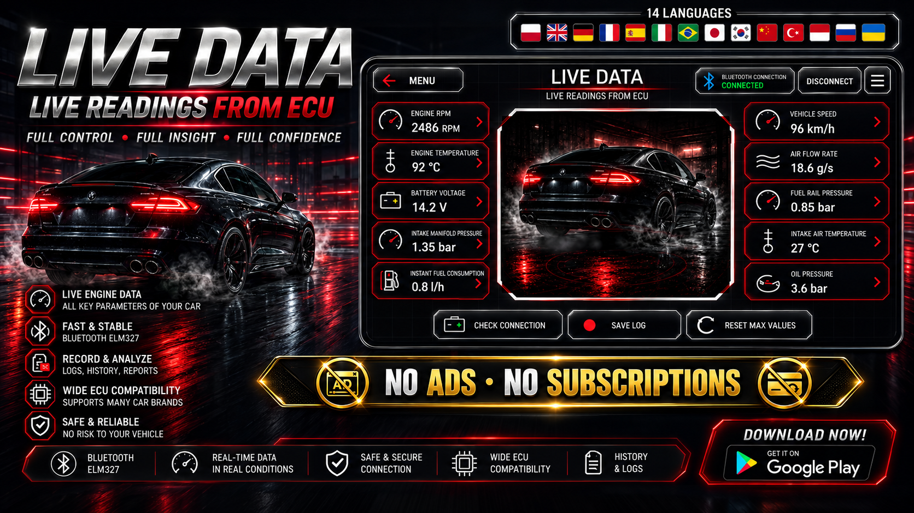
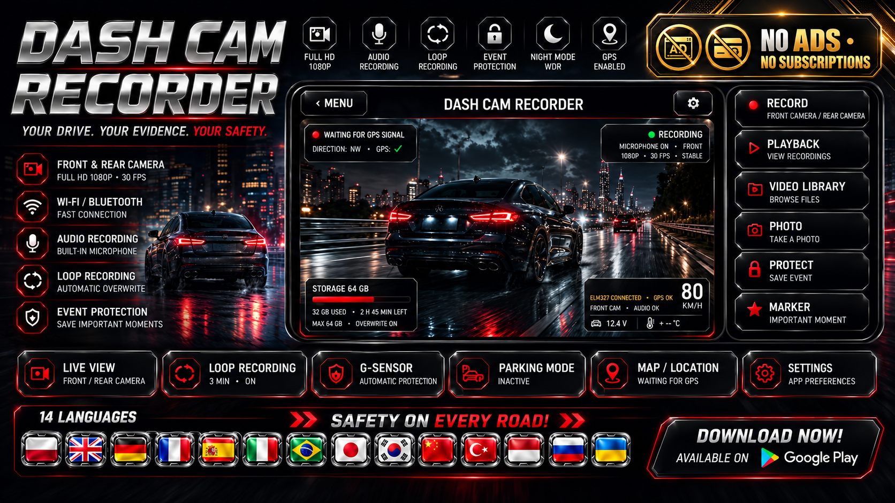
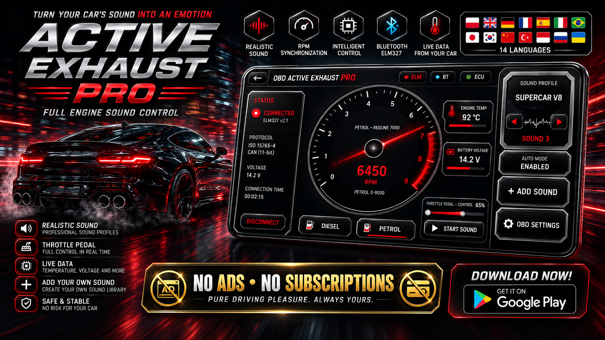
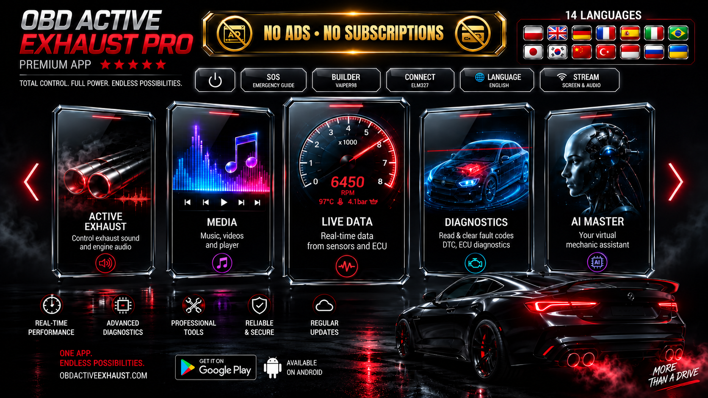

← Applications Android et Wear OS · Applications par fonction
Application AndroidOBD2 Données du véhicule en direct et échappement actif
OBD Active Exhaust Pro
Lisez les données des véhicules OBD2 et ELM327 en direct, surveillez les paramètres en temps réel et utilisez les commandes d'échappement actives et les outils pratiques pour le conducteur sur Android.
Captures d’écran






Que fait cette application
- Données du véhicule en direct OBD2
- Paramètres en temps réel ELM327
- contrôle actif des gaz d'échappement
- Outils pilotes Android
Utile pour les personnes recherchant des données de véhicule en direct OBD2, des paramètres en temps réel ELM327, un contrôle actif des gaz d'échappement, des outils de pilotage Android sur Android.